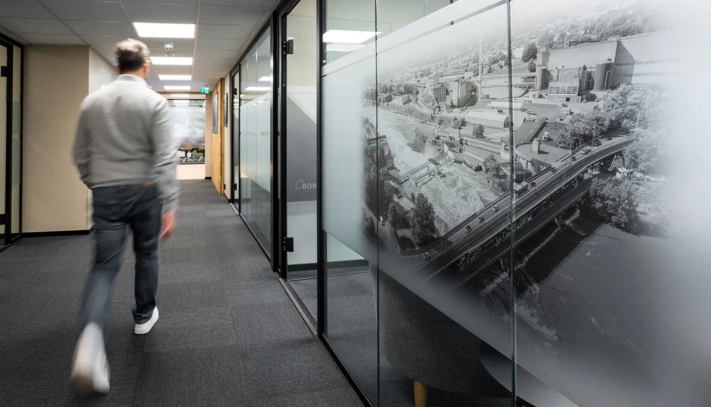

Forside/Om oss
Om Borg Svakstrøm
Lokal aktør med nasjonale tjenester, og 40 år med innovative og digitale løsninger.
Selskapet
Teknisk fagmiljø i 40 år
Borg Svakstrøm Telecom & Sikkerhet er sammensatt av ingeniører og teknikere med høy fagkunnskap og omfattende erfaring i sektoren.
Kundene spenner fra små lokale virksomheter til store nasjonale selskaper.
- 40 år i bransjen.
- Ingeniører og teknikere.
- Lokale og nasjonale kunder.
| Telefon | 69 13 77 77 |
|---|---|
| E-post | firmapost@borgsvakstrom.no |
| Adresse | Statsminister Torps vei 1 |
| Fagområder | Sikkerhet, telefoni, IKT, lyd, bilde, møterom |
Bærekraft
Bærekraftige løsninger for fremtiden
Vi jobber med løsninger som varer – og som virksomheten kan leve med over tid.

Vil dere vite mer om oss?
Ta kontakt, så forteller vi hva vi kan bidra med.